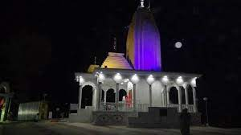
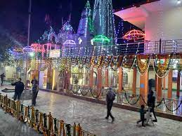
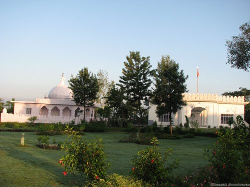
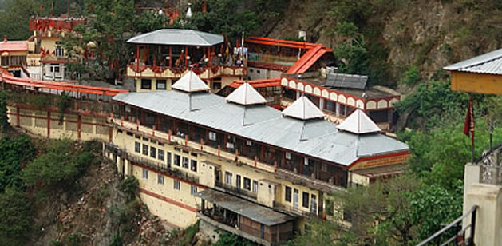

HAMIRPUR:
Hamirpur was named after the Katoch king Raja Hamir Chanda,
and was carved out of the Kangra District.
Due to its pleasant climate especially during the winters,
Hamirpur is a popular tourist destination. The town also has
the highest density of roads and is thus one of the most accessible
areas of Himachal Pradesh. Here is a list of the various tourist attractions in Hamirpur.

Famous Places Around Hamirpur :
1. Sujanpur Tira:
Sujanpur Tira is The capital of the Katoch Dynasty is famous for its
various ancient forts, temples and festivities during the major Hindu
festivals. The place also offers various adventure sport facilities to
its visitors like Paragliding, River Rafting and trekking. The various
temples like the Narbadeshwar, Gauri Shankar and Murli Manohar temple
are frequented by a huge number of Hindu pilgrims.

2. Nadaun:
Nadaun was established again by the Katoch rulers of Kangra, when they lost
the fort to the Mughal emperor Jahangir. The small town is located by the River
Beas and is known for its various recreational facilities like Rafting, trout
fishing and camping at the river shores. The old palace of the Katoch rulers
and the Shiva temple are few of the major attractions in this town.

3. Deotsidh Temple:
Also known as the Baba Balak Nath Temple, Deotsidh Temple is an old cave temple
just 30 kilometers from Hamirpur. The temple is visited by tourists and pilgrims
all year round and stay near the temples in the facilities funded by the state
government of Himachal Pradesh.
The town served as the temporary capital of the Katoch kings and was developed
under their tutelage. The main sources to the towns economy is tourism which
is supported by the various trekking, adventure sports and pilgrimage hotspots
located around the town. The city of Hamirpur is easily accessible by road and
the best way to discover the town is by hiking.
